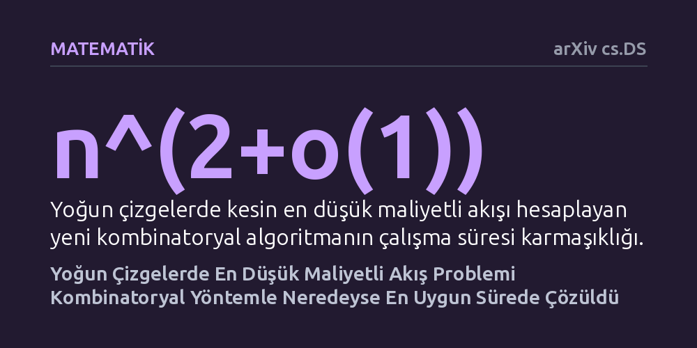

MATEMATIK · arXiv cs.DS · 2026-10-27
Araştırmacılar, ağlarda en düşük maliyetli akış problemini sürekli optimizasyon yerine yalnızca ayrık adımlara dayanan kombinatoryal bir yöntemle çözmenin yolunu araştırdı. Geliştirilen yeni yapısal indirgeme sayesinde, yoğun çizgelerde kesin çözümün neredeyse doğrusal zamanda (n^(2+o(1))) elde edilebileceği kanıtlandı.
Onlarca yıldır sürekli analizin ağır matematiksel araçlarına bağımlı görülen temel bir ağ probleminin, doğrudan çizge geometrisini kullanan sade kombinatoryal adımlarla da neredeyse en yüksek hızda çözülebileceğini gösteriyor.

Ulaşım hatlarından internet veri paketlerine, elektrik şebekelerinden lojistik tedarik zincirlerine kadar modern altyapıların merkezinde ağ akış problemleri yer alır. Buradaki temel amaç, bir kaynaktan bir hedefe belirli miktarda veriyi veya yükü iletirken, hatların kapasite sınırlarını aşmamak ve bu işlemi mümkün olan en düşük maliyetle gerçekleştirmektir. Bilgisayar biliminde 'en düşük maliyetli akış' (minimum-cost flow) olarak bilinen bu problem, onlarca yıldır algoritmalar dünyasının en temel yapı taşlarından biri olarak incelenmektedir.
Bu problemi çözmek için araştırmacılar tarihsel olarak iki ana yol izlemiştir: İlki, problemi sürekli bir geometri ve diferansiyel denklemler dünyasına taşıyan 'sürekli optimizasyon' (özellikle iç nokta yöntemleri); ikincisi ise çizgenin düğüm ve kenarlarında adım adım yürüyen ayrık 'kombinatoryal yöntemler'dir. 2022 yılında sürekli optimizasyon araçları kullanılarak neredeyse doğrusal zamanda çalışan olağanüstü hızlı bir algoritma geliştirilmişti. Ancak saf kombinatoryal algoritmalar tarafında 1987 yılında Goldberg ve Tarjan tarafından ortaya konan yaklaşımdan bu yana neredeyse kırk yıldır kayda değer bir hızlanma elde edilememişti.
Genel yönlü ağlarda akış hesaplamanın bu kadar zor olmasının temel nedeni ağ içerisindeki döngülerdir. Bir akış döngüye girdiğinde, maliyet hesapları ve tıkanıklık yönetimi içinden çıkılmaz bir hal alabilir. Bu makalenin yazarları, genel bir çizgedeki akış problemini doğrudan çözmeye çalışmak yerine, problemi döngüsü bulunmayan çok daha uysal bir yapıya aktarmanın yolunu aradılar.
Araştırmacıların geliştirdiği temel kavramsal yenilik, 'akış ve maliyeti koruyan DAG izdüşümü' adı verilen yeni bir yapısal yöntemdir. Bu yöntem, keyfi bir yönlü çizgeyi alıp, akışların hem tıkanıklığını hem de maliyetini çok küçük bir sapmayla koruyarak yönlü döngüsüz bir çizgeye (DAG) dönüştürmektedir. Üstelik bu işlem bir 'siyah kutu' indirgemesi olarak çalışmakta, yani döngüsüz çizgeler için geliştirilecek herhangi bir yaklaşık algoritmanın doğrudan genel çizgelerde de kullanılabilmesini sağlamaktadır.
Yazarlar geliştirdikleri bu güçlü indirgemeyi, yönlü döngüsüz çizgeler üzerinde çalışan basit bir 'artırma yolu' (augmenting path) tabanlı yaklaşıklık algoritmasıyla birleştirdi. Sonuç olarak, genel çizgelerde kesin en düşük maliyetli akışı n^(2+o(1)) sürede hesaplayan yeni bir kombinatoryal algoritma elde edildi.
Bu sonuç özellikle 'yoğun çizgeler' için büyük bir anlam taşımaktadır. Yoğun çizgelerde, yani olası tüm bağlantıların neredeyse tamamının mevcut olduğu ağlarda kenar sayısı n^2 mertebesindedir. Dolayısıyla n^(2+o(1)) süresi, girdi boyutuna kıyasla neredeyse doğrusal ve teorik olarak en iyiye (optimal) yakın bir performansı temsil etmektedir. Bu bulgu, 1987'deki Goldberg-Tarjan çalışmasından bu yana kombinatoryal algoritmalar alanındaki ilk somut hızlanma başarısıdır.
Bu çalışmanın sunduğu en büyük teorik kazanım, gelecekte kombinatoryal akış algoritmaları üzerinde çalışacak araştırmacıların işini kökten kolaylaştırmasıdır. Artık araştırmacıların genel çizgelerin karmaşık döngüleriyle boğuşmasına gerek kalmamış; döngüsüz çizgeler için daha verimli algoritmalar geliştirmeye odaklanmaları yeterli hale gelmiştir.
Yine de çalışmanın kapsamını doğru değerlendirmek gerekir. Bu algoritma yoğun ağlarda neredeyse en iyi sonucu verse de, bağlantıların az olduğu seyrek ağlarda 2022'deki sürekli optimizasyon tabanlı algoritmanın hızına henüz ulaşamamıştır. Ayrıca bir önbaskı olarak bağımsız matematikçilerin ve hakemlerin ayrıntılı doğrulamasından geçmesi gerekmektedir. Buna rağmen çalışma, sürekli analiz yöntemlerine mahkûm sanılan bir problemin ayrık mantıkla da en üst düzeyde çözülebileceğini kanıtlamaktadır.